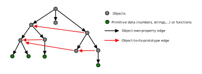

Prototype Trees
In current practice, the prototype mechanism in JavaScript only supports the instantiation of components at a single level. If x is a component which we wish to instantiate via prototypical inheritance, our first option is to invoke y=Object.create(x). The newly created object y only inherits from its prototype, x, at the top level. All other structure is shared. So, if x has any depth of structure, we have created something that is radically entangled with its prototype, and in this sense does not fulfill the purpose of instantiation: creation of a new copy of the component which inherits its functionality, but can be altered freely to suit its role. The second prototype-spawning option, new, has the same problem - it only operates at a single level.
By a "prototype tree" I mean a structure that is a tree from the standpoint of the object-to-own-property-value relation, but in which prototype chains and functions may appear. Here is an example of such a structure:
instantiate is the core method of this structure. For a prototype tree y,
let x = y.instantiate();
has an effect similar to
let x =Object.create(y);
In both cases x is a new object that inherits, prototype-style, from y. The difference is that while Object.create operates at only one level, y.instantiate() does a deep copy of y as a tree, and returns a structure in which all of the copied nodes inherit prototype-wise from the nodes from which they were copied, and in which the prototype chains of y have also been copied into x. Full detail can be found here.
{{endplate}}